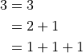
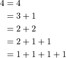
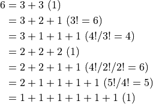
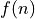
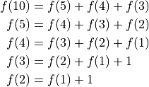
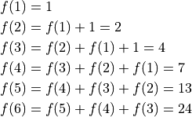

Partitions¶
What are the number of ways of putting 3 indistinguishable balls into a number of indistinguishable boxes where the number of boxes is equal to or more than the number of balls?
This is same as posing the following question: How many ways are there to split 3?

The boxes are indistinguishable. Hence, the order does not matter “2+1” is same as “1+2”.
A way of splitting a number is called a “partition” of that number.
If we replace 3 with a larger number such as 10, we might need a computer program to list all the partitions. Nonetheless, we can carry out a manual listing procedure for small numbers. The number of partitions of 3, 4, 5, 6, 7, and 8 are 3, 5, 7, 11, 15, 22, respectively. Therefore, we could limit ourselves to say 7 for maunal listing.
Let us first start with 4.

What recipe did we follow?
4 is our first partition.
Then, we reduce the first term - 4 - to 3. Choosing 3 as the first term, we break the remaining part “1” into all its partitions. The only condition is that none of terms should exceed 3.
Next, we reduce the first term - 3 - to 2. Choosing 2 as the first term, we break the remaining part “2” into all its partitions. This time, none of the terms should exceed 2.
Finally, we reduce the first term to 1. For the remaining part - “3”, all the partitions are listing with none of the terms exceeding 1.
In any of the above steps, wherever we say, list all the partitions, we are using the recipe itself. Hence, it is called a “recursive” algorithm or “recursion”.
We know that there is only one way to write 1 (irrespective of whatever upper positive integer bound we put on the terms). This is what causes the recursive recipe to stop.
Next, consider 7.
![7 &= 7
&= 6 + 1
&\text{$1$ cannot be split further}
&= 5 + 2
&= 5 + 1 + 1
&\text{We have attached all partitions of $2$ to $5$}
&= 4 + 3
&= 4 + 2 + 1
&= 4 + 1 + 1 + 1
&\text{We have attached all partitions of $3$ to $4$}
&= 3 + 3 + 1
&= 3 + 2 + 2
&= 3 + 2 + 1 + 1
&= 3 + 1 + 1 + 1 + 1
&\text{We have attached all partitions of $4$ to $3$. However, the partitions could not have any term larger than $3$.}
&\text{Hence, the partition $4$ was diallowed}
&= 2 + 2 + 2 + 1
&= 2 + 2 + 1 + 1 + 1
&= 2 + 1 + 1 + 1 + 1 + 1
&\text{We have attached all partitions of $5$ to $2$. However, the partitions could not have any term larger than $2$.}
&= 1 + 1 + 1 + 1 + 1 + 1 + 1](_images/math/b173f2671880794770265fc4168d2974fb6e9c34.png)
Let us look at an application.
Everyday at school, Jo climbs a flight of 6 stairs. Jo can take the stairs 1, 2, or 3 at a time. For example, Jo could climb 3, then 1, then 2. In how many ways can Jo climb the stairs?
We list the partitions of 6 that used only 3, 2, or 1. For each partition, we list the number of distinguishable permutations of the terms (in bracket) because the order in which the steps were taken matters in this scenario.

Adding up all the numbers in the brackets, we get 24.
There is a different way of looking as this same problem. This approach does not use partitions. We present it here nonetheless.
Jo can reach the 6th step from either the 5th, 4th, or the 3rd step in one hop. So the number of ways to get to the 6th step is the sum of the number of ways to get to the 5th, 4th, or the 3rd step. Now, we can use the same approach to find the number of ways to get to the 5th, 4th, and 3rd steps. Let

be the number of ways to get to the nth step.
Now, working backward and populating the function,
